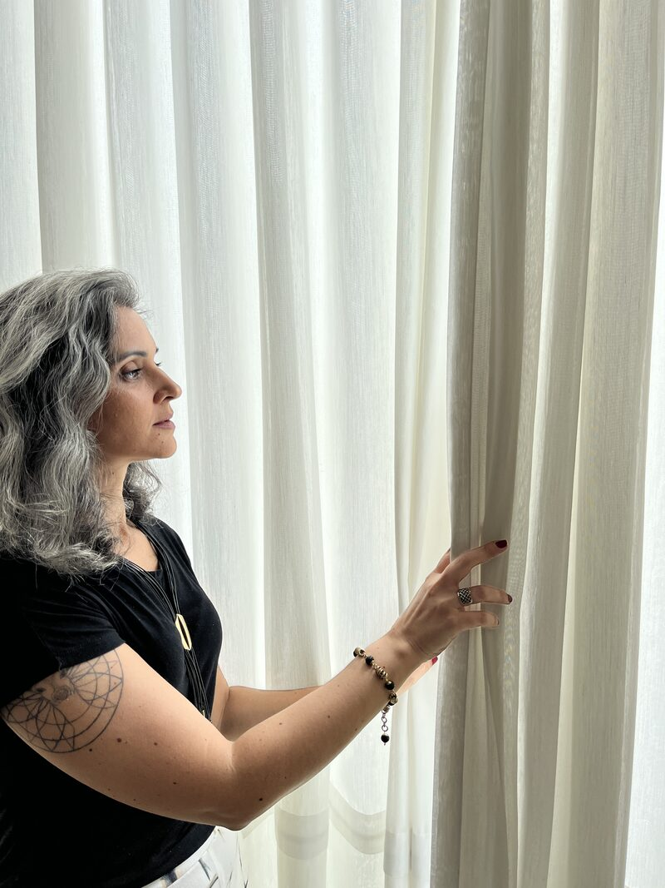

Posicionamento, comunicação e mídia para que o valor que já existe no seu trabalho se torne visível para que as pessoas certas cheguem até ele.
Conheça as soluções
Perguntas que aparecem quando o trabalho já é bom, mas ainda não é visto como deveria.
Essas respostas raramente estão em uma única ação de marketing. Elas dependem de como oferta, comunicação, posicionamento, relações e processos trabalham juntos.
Foi a partir dessa visão que organizei duas formas de atuação: a ECOS, para investigar e dar direção ao negócio; e a FLUXOS, para colocar essa direção em movimento.
A ECOS é uma consultoria para negócios criativos que precisam compreender melhor o momento em que estão antes de decidir o próximo passo.
Eu me aprofundo na marca, no mercado, na forma como o trabalho é apresentado e no percurso entre o primeiro olhar e a decisão de compra.
Essa leitura distingue o que realmente pede atenção daquilo que apenas parece urgente.
Conheça a ECOSInvestigação e direção para o negócio
A mídia pode ampliar o alcance de uma marca. Mas ela chega na ponta de um percurso. Antes existem escolhas de posicionamento, oferta e comunicação. Depois existem conversas e decisões. Quando essas partes se encontram, as pessoas certas chegam. E ficam.
Movimento contínuo para a marca
A FLUXOS é uma assessoria contínua para negócios criativos que já sabem o que oferecem e precisam tornar a marca visível para as pessoas certas.
Acompanho comunicação, mídia e o percurso de quem chega até a marca, do primeiro contato ao momento em que a pessoa decide que quer.
A mídia passa a trabalhar conectada à estrutura que recebe e conduz esse movimento.
Conheça a FLUXOSAlgumas marcas precisam compreender por que um trabalho consistente ainda não é percebido como deveria. Outras já sabem o que oferecem e precisam criar as condições para serem encontradas pelas pessoas certas.
Uma solução não exige a contratação da outra. A escolha depende do momento do negócio, da estrutura que já existe e do que precisa ser construído agora.
Entenda por onde começarOs relatos originais das clientes serão inseridos aqui, sem alteração de redação.
Se o trabalho já existe e é consistente, mas as pessoas certas ainda não estão chegando, ou chegam e não ficam, podemos começar entendendo o momento do seu negócio.
Entre em contato